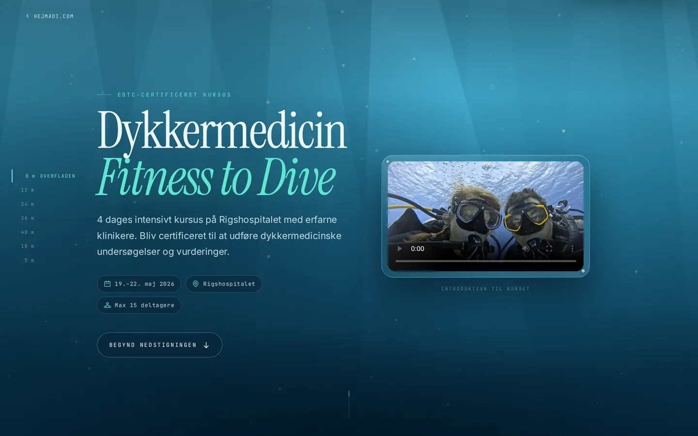
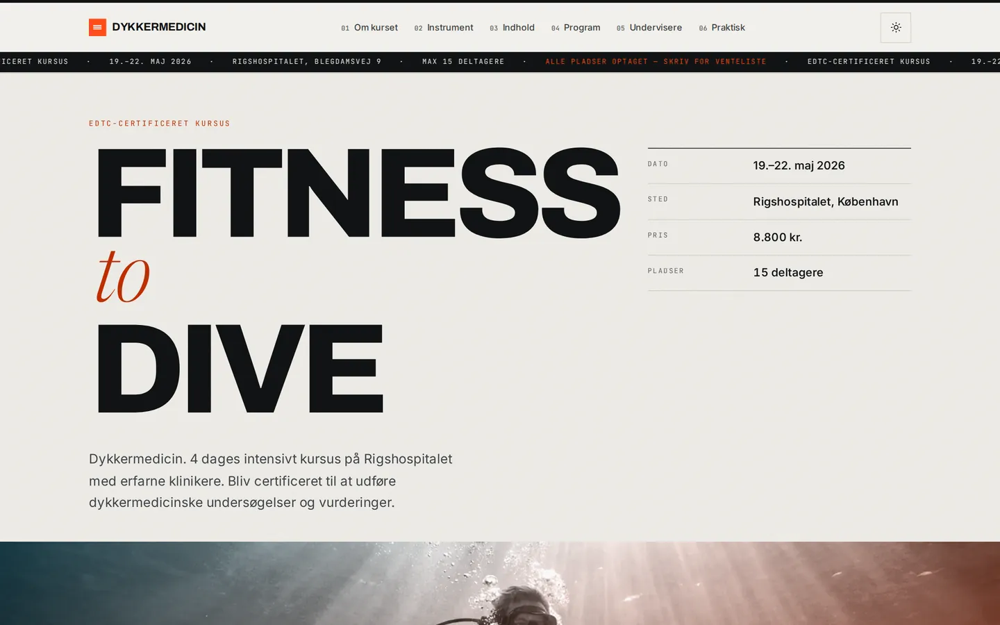
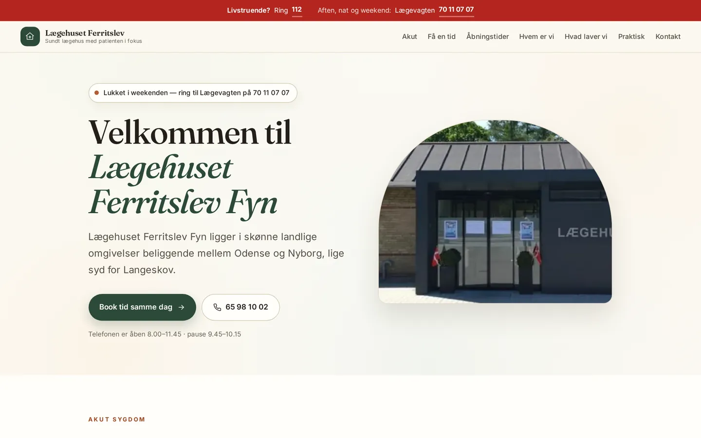
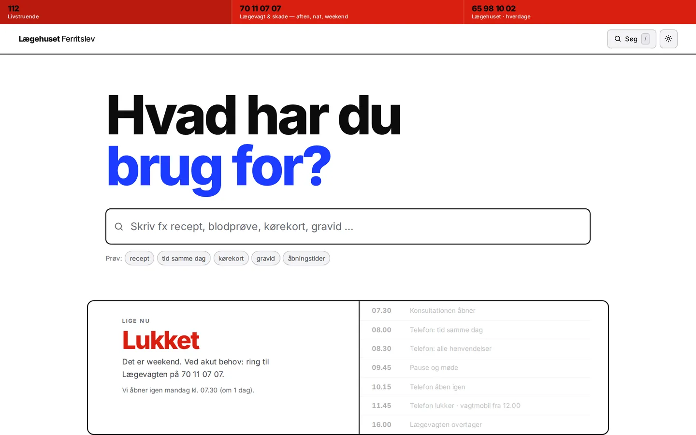

Fire bud · august 2026
Samme indhold som i dag — ord for ord, kun sproglig korrektur. Det, der er nyt, er formen: hvad en side kan gøre, når den får lov at leve. Åbn dem på både telefon og computer; de opfører sig forskelligt begge steder.
EDTC-kurset på Rigshospitalet. Målgruppe: læger.

Bud AFilmisk · mørk · scroll-drevet
Hele siden er ét dyk. Du stiger ned gennem vandsøjlen, lyset forsvinder, og dykkercomputeren i hjørnet viser dybde, omgivende tryk og nul-stop-tid, mens du scroller. Ved tilmeldingen holder du sikkerhedsstop på 5 meter.

Bud BRedaktionelt · klinisk · lyst/mørkt
Det modsatte greb: papir, blæk og hårfine linjer som i et tidsskrift. Midt i siden sidder et rigtigt instrument — træk i dybden og se Boyles lov, partialtryk, nul-stop-tid og MOD ændre sig i realtid. Den fysik, hele kurset hviler på.
Hele det nuværende sites indhold, samlet på én side. Målgruppe: patienter.

Bud AVarmt · fynsk · menneskeligt
Et hus, ikke en portal. Buede former, papirfarver og en himmel bag heroen, der skifter stemning med tidspunktet på dagen. Statusmærket ved siden af overskriften ved, om telefonen er åben lige nu — og dagbåndet viser hele dagens rytme på én linje.

Bud BVærktøj · hård kontrast · søgning først
Bygget til den, der har travlt og er bekymret. Tre nødnumre klæber til toppen, og resten af sitet er ét søgefelt: skriv «recept», «kørekort» eller «gravid», og svaret folder sig ud med det samme. Statusboksen fortæller, hvad der gælder lige nu.
Teksterne er de eksisterende. De er læst igennem for stavning, kommaer og orddeling — ikke for mening. Fx «Vi arbejdet efter princippet» → «Vi arbejder efter princippet».
Nyskrevet er kun det, der binder de nye elementer sammen: teksten i instrumentet, etiketterne i dagbåndet og de tre «vej ind»-kort.
Ren HTML, CSS og JavaScript. Ingen frameworks, ingen build, ingen cookies, ingen
eksterne kald — skrifter, billeder og video ligger i assets/.
Læg en mappe på en webserver, og den virker. Billeder er komprimeret til WebP i to størrelser.
Åbn hvert bud på telefonen først — det er der, forskellen mærkes. Bemærk især, hvad der sker, når du scroller (bud A) og når du bruger dem (bud B).
Du kan også blande: fx Instrumentets trykmodel ind i Nedstigningen.